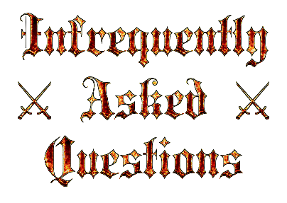

Home ✦
IAQ ✦
Rules ✦
Contact

What is Oath Club?
This is how it works: On the final day of EMF you swear an oath to do/achieve/complete something by the next EMF, which you then write down in The Big Red Shiny Book. Then at the next EMF you
present evidence of upholding your oath. If you can do this, then Oath Club will reward you with a special prize.
How do I take part in Oath Club?
You seek out The Oath Warden, who is presently also The Book Keeper. The Oath Warden will be in a fixed location (most likely the lounge) with The Big Red Shiny Book during the Oath Club office hours. But, if you can't make the office hours, then you can also ring Oath Club HQ, and The Oath Warden will try to arrange a meeting at a time that works better for you.
Can I make an oath without being physically present?
It is best if you're there to write down your oath, so that The Oath Warden can look you in the eyes and weigh your soul. It's also better if you state your oath in front of an audience so that they can all judge you at the next EMF if you fail to deliver.
What happens if I break my oath?
That is for Mithra and Horkos to decide. Nothing. But you'll see the others who have gotten their special prize and possibly feel a bit jealous of them.
What happens if I can't keep my oath in time for the next EMF, but am able to before one of the following EMFs?
That is fine, and your dedication is very admirable in the eyes of Oath Club. You will still get your special prize. Perhaps it will be even special-er...?
What is the "special prize"?
All the Oath Club team can say for now is that it may or may not augment your badge...
But I don't have a badge...
The Oath Club team haven't yet figured out what to do in this case. But it is being thought about...
Does my oath need to be techy?
Not at all. But it should be something you can present evidence of having done.
Does my oath need to involve something (workshop, talk, project, etc) that I bring to the next EMF?
No. Oaths related to your outside-of-EMF life are very welcome.
What happens if I uphold my oath, but I'm unable to make it to the next EMF?
Fingers crossed the Oath Club team will post your special prize to you.
Can I make multiple oaths in the same year?
No. We need you to lock in on one target. So choose wisely.
I've just had a look at your rules. Do they also apply to The Oath Warden and the Oath Club team?
Of course. In fact, The Oath Warden had originally wanted to make a "try to" oath, until the Deputy Warden rightfully bullied her out of it.